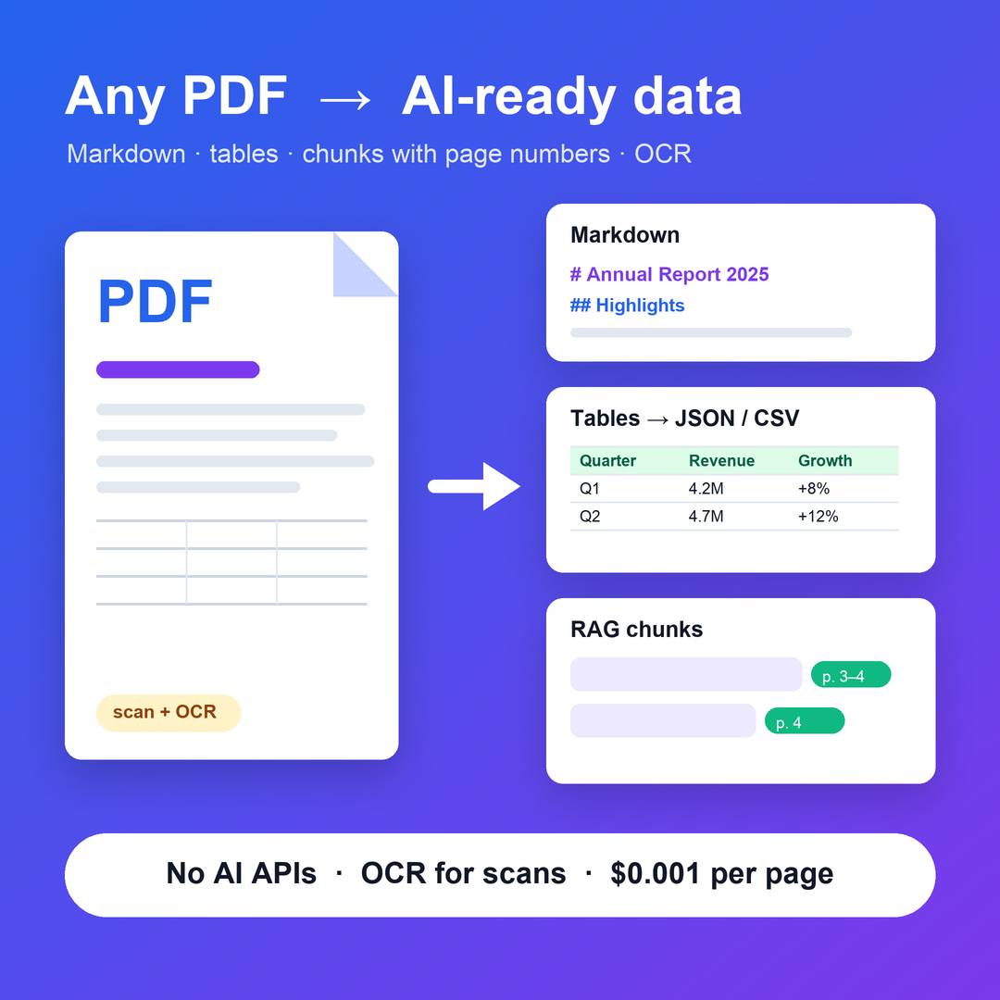

Turn any PDF into data your AI can use.
Clean Markdown, tables as JSON/CSV and RAG-ready chunks with page numbers. Built-in OCR for scanned PDFs. No AI APIs: your documents stay inside the Actor.

Better input, better answers
Structure preserved
Headings rebuilt from font sizes, bulleted and numbered lists, clean paragraphs.
Noise removed
Running headers, footers and page numbers are stripped; words split across lines are joined again.
Tables extracted
Gridded tables and the rule-only tables of financial reports become JSON and CSV, and GitHub tables in the Markdown.
Chunks for embeddings
Split on paragraph and sentence boundaries, with size and overlap you choose. Each chunk keeps pageStart, pageEnd and source.
OCR for scans
Pages without text are read automatically at 300 DPI, in English, Italian, German, French and Spanish.
Robust batches
One broken PDF never stops the batch, and every failure comes with a clear reason. Memory stays flat on 300+ page documents.
Made for documents people ask questions about
RAG chatbots and AI agents
Manuals, policies, contracts and knowledge bases, with answers that cite the exact pages.
Tables from reports and invoices
Financial statements, price lists and invoices straight to CSV or JSON.
Scanned archives
Make old scanned PDFs searchable and ready for embeddings.
LLM pipelines
Feed Markdown instead of raw PDF text: better answers, fewer tokens.
Three steps, no code
Add your PDFs
Paste links to PDF files, or upload files that aren't public.
Pick the outputs
Markdown, plain text, tables, chunks: any combination. OCR turns on by itself for scanned pages.
Use the results
Download them, or send the chunks to your vector database with Apify's integrations.
Pay only for what's processed
A 20-page text report with 3 tables costs $0.026. Failed downloads, non-PDF files and password-protected files are never charged. Set a spending limit and the run stops cleanly, keeping what was already processed.
FAQ
Are my documents sent to OpenAI or another AI service?
No. Extraction and OCR run entirely inside the Actor.
Can I process files that aren't public?
Yes. Upload them in the input form (or to an Apify key-value store) and they're processed like links.
Does it open password-protected PDFs?
No. They're reported as "password protected" and not charged. The Actor never tries to unlock them.
How good is the OCR?
It depends on the scan: resolution, skew and contrast matter. Printed text works well; handwriting isn't supported.
Which tables are detected?
Tables with a full grid, or with horizontal lines above and below. Tables made only of aligned text with no lines stay as text.
Stop copy-pasting from PDFs.
Open the Actor on the Apify Store, paste a PDF link and see the Markdown, tables and chunks in seconds.
Open on Apify Store →